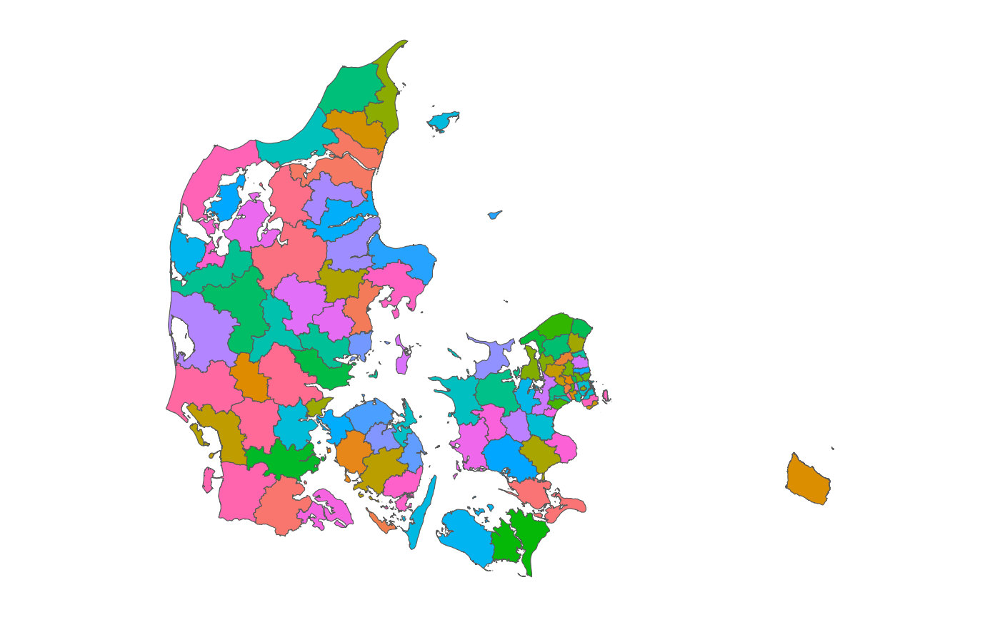
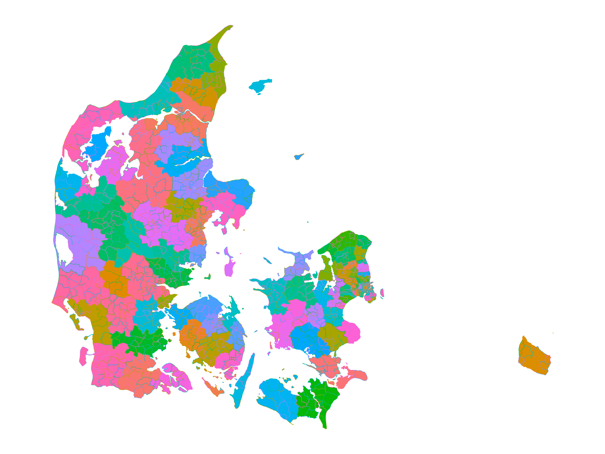
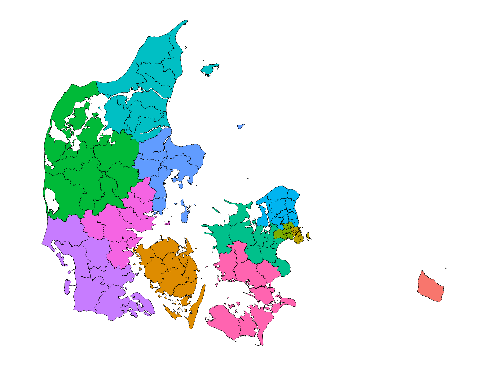

This article will show you how to use get_map_data() and
ggplot2 to draw nice looking maps of Denmark.
First we need to load the packages. Here, we only load ggplot2 to minimize dependencies, but you can definitely load the entire tidyverse for convenience.
Getting map data
After loading the required packages we need to get the map data. We will request map data for all (98) danish municipalities. The danish word for municipality is kommune which is what we will request.
municipalities <- get_map_data("kommuner")
#> → Getting data on `kommuner`. This usually takes 13.13s.
#> Fetching data from the API. This will take some time.
#> Reading data to `st`.
#> Converting map data to `sf` objectIn the dropdown below you can see the head() of the data
we have received.
head(municipalities)
#> Simple feature collection with 6 features and 11 fields
#> Geometry type: MULTIPOLYGON
#> Dimension: XY
#> Bounding box: xmin: 12.2635 ymin: 55.53633 xmax: 12.73425 ymax: 55.77944
#> Geodetic CRS: WGS 84
#> dagi_id kode navn regionskode udenforkommuneinddeling
#> 1 389103 0101 København 1084 FALSE
#> 2 389104 0147 Frederiksberg 1084 FALSE
#> 3 389105 0151 Ballerup 1084 FALSE
#> 4 389106 0153 Brøndby 1084 FALSE
#> 5 389107 0155 Dragør 1084 FALSE
#> 6 389108 0157 Gentofte 1084 FALSE
#> regionsnavn ændret geo_ændret geo_version
#> 1 Region Hovedstaden 2024-10-04 21:02:54 2024-10-04 21:02:54 21
#> 2 Region Hovedstaden 2024-01-16 22:03:35 2024-01-16 22:03:35 7
#> 3 Region Hovedstaden 2025-05-14 21:02:41 2025-05-14 21:02:41 9
#> 4 Region Hovedstaden 2024-01-10 22:10:55 2024-01-10 22:10:55 7
#> 5 Region Hovedstaden 2023-03-24 22:28:38 2023-03-24 22:28:38 3
#> 6 Region Hovedstaden 2024-10-04 21:02:54 2024-10-04 21:02:54 7
#> visueltcenter_x visueltcenter_y geometry
#> 1 12.49391 55.70409 MULTIPOLYGON (((12.56767 55...
#> 2 12.52373 55.67937 MULTIPOLYGON (((12.53735 55...
#> 3 12.36852 55.72707 MULTIPOLYGON (((12.30407 55...
#> 4 12.40438 55.64504 MULTIPOLYGON (((12.44279 55...
#> 5 12.65023 55.59381 MULTIPOLYGON (((12.64513 55...
#> 6 12.55072 55.75098 MULTIPOLYGON (((12.59175 55...The data can then be passed to a ggplot2::geom_sf() to
print the map. I have also specified that the fill color should be based
on the municipality name to make it a bit more colorful.
ggplot(municipalities, aes(fill = navn)) +
geom_sf() +
cowplot::theme_map() +
theme(legend.position = "none")
Drawing maps with many lines
The above example is not very resource intensive. Trying to plot all
the danish voting precincts on the other hand, is somewhat more
intensive. To ease the production of such maps, I will now demonstrate
how easy it is to simplify the lines (without loss of substantial
quality) to faster plot the map. We will use the
rmapshaper::ms_simplify() function to do this.
First we get the data with get_map_data() and provide
the afstemningsomraader (voting areas) as the type.
voting <- get_map_data("afstemningsomraader")
#> → Getting data on `afstemningsomraader`. This usually takes 18.77s.
#> Fetching data from the API. This will take some time.
#> Reading data to `st`.
#> Converting map data to `sf` objectThen let’s quickly examine how many more polygons we now have to draw.
I have printed the amount of polygons for the municipality level as well as the voting precinct level.
To plot all these polygons takes a substantial amount of time - You can either just trust me on that or try it out for yourself after finishing this article!
To accommodate this larger number of polygons we will simplify the lines that make up said polygons.
voting_simplified <- rmapshaper::ms_simplify(
voting,
keep = 0.01,
keep_shapes = TRUE
)After simplifying the data we can now plot it.
ggplot(voting_simplified, aes(fill = kommunenavn, color = navn)) +
geom_sf() +
cowplot::theme_map() +
theme(legend.position = "none")
Here, I have colored the shapes based on the municipality and then turned the lines of each shape to a different color based on the voting precincts name.
Overlaying multiple maps
If you would like to plot how different municipalities are distributed in the police regions you can simply get the data for both maps and pass them as their own dataset/geom combos in ggplot2.
police <- get_map_data("politikredse")
#> → Getting data on `politikredse`. This usually takes 14.14s.
#> Fetching data from the API. This will take some time.
#> Reading data to `st`.
#> Converting map data to `sf` object
# We will reuse the municipality data from earlier.Then you can pass it to ggplot2 as follows.
ggplot() +
geom_sf(
data = police,
aes(fill = navn),
color = NA
) +
geom_sf(
data = municipalities,
color = "black",
fill = NA
) +
cowplot::theme_map() +
theme(legend.position = "none")
As you can see, we have now produced a map with shapes from different subsections of Denmark.